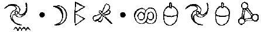
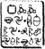

ARTEMIS FOWL’UN GÜNLÜĞÜNDEN ALINTI. DİSK 2. KODLANMIŞTIR.
BUGÜN Babama protez bacağı takıldı. Bütün işlem sırasında, sanki Grafton Caddesinde yeni bir takımın ölçüsü almıyormuş gibi şaka yapıp durdu. Kabul etmeliyim ki iyi mizacı bulaşıcıydı ve ben bile sadece hastanedeki yatağının keçesine oturup onun varlığını keyfine varmak için bahaneler bulduğumu fark ettim.
Her zaman böyle değildi. Geçmişte, babamı ziyaret etmek için insanın ciddi nedenleri olması gerekirdi. Tabii ki genelde görüşmeye müsait değildi ve olsa bile zamanı sınırlıydı, insanlar iyi bir sebebi olmadan Fowl çalışma odasına dalamazlardı. Ama şimdi yanında olmamdan hoşlandığını hissediyordum. Bu güzel bir duyguydu.
Babam her zaman bilgece konuşmaktan hoşlanırdı ama şimdi ekonomikten daha çok felsefiyi tercih ediyordu. Eskiden, dikkatimi Financial Times ’m hisse senedi fiyatlarına yönlendirirdi.
“Bak, Artemis,” derdi. “Her şey düşer ama altın yerinde kalır. Bunun nedeni yeteri kadar olmaması. Ve asla yeteri kadar olmayacak. Altın al ve iyice sakla.”
Onun bilgece söylediklerini dinlemekten taşlanırdım ama artık onları anlaması zorlaşmıştı.
Kendine gelişinin üçüncü gününde, babam yürüme antrenmanlarını yaparken hasta yatağının uyuyakaldım. Uyandığımda onu düşüncelice bana bakar buldum.
“Sana bir şey söyleyeyim mi, Arty?” dedi.
Ne geleceğinden şüpheli bir şekilde başımla onayladım.
“Hapis olduğum zaman süresince hayatımı düşündüm, aileme ve etrafımdakilere neye patlamış olurlarsa olsunlar servet toplamak için onu nasıl boşa harcadığımı. Bir insan yaşamında değişiklikler yapmak için çok az fırsat bulur. Doğru şeyi yapmak için. Eğer istersen bir kahraman olmak için. Ben bu mücadeleye karışmaya niyetliyim.
Bu babamdan duymaya alıştığım türden bir bilgelik değildi. Bu onun doğal kişiliği miydi yoksa peri büyüsü mü? Ya da ikisinin bir karışımı mı?
“Ben buna hiç karışmamıştım. Her zaman için dünyanın değişemeyeceğini düşünmüştüm.”
Babamın bakışları yeni bir tutkuyla yanıp tutuşarak yoğunlaştı.
“Ama durum artık farklı. Benim önceliklerim artık farklı. Günü yakalamak, her babanın olması gereken kahraman olmaya niyetliyim.”
Yatağa, yanıma oturdu.
"Ya sen, Arty? Bu yolculuğu benimle beraber yapacak mısın? Zamanı gelince sen de bir kahraman olma fırsatını değerlendirecek misin?”
Cevap veremedim. Cevabı bilmiyordum. Hâlâ bilmiyorum.
FOWL MALİKÂNESİ
Artemis iki saat boyunca kendini çalışma odasına kilitleyip Kâhya’nın ona öğrettiği gibi bacaklarını kavuşturup meditasyon pozisyonunda oturdu. Ara sıra yüksek sesle, önündeki paspasın üzerine konmuş, sesle çalışan dijital kayıt cihazına kaydedilsin diye bir fikir söylerdi. Kâhya ve Juliet bu planlama sürecini kesmemeleri gerektiğini iyi bilirlerdi. Bu süre görevin başarısı için çok önemliydi. Artemis’in varsayımsal bir durumu gözünün önüne getirebilme ve olası sonuçlan hesaplama kabiliyeti vardı. Bu neredeyse bir rüya haliydi ve herhangi bir şekilde rahat olursa fikirleri bir köpük gibi uçurabilirdi.
En sonunda Artemis dışarı çıktı, yorgundu ama memnundu da. Elinde üç yazılabilir CD vardı.
“Bu dosyaları incelemenizi istiyorum,” dedi. “Burada görevlerinizin detayları var. İçindekileri ezberlediğinizde diskleri yok edin.”
Holly diskleri aldı.
“Bir CD. Ne kadar ilginç. Bunlardan bizim müzelerimizde var.”
“Çalışma odasında birkaç bilgisayar var,” diye devam etti Artemis. “İstediğini kullan.”
Kâhya’nın elleri boştu.
“Bana yok mu, Artemis?” diye sordu.
Artemis diğerleri gidene kadar bekledi.
“Senin talimatlarını ağızdan vermem gerekiyordu,” diye başladı. “Foaly’nin onları bilgisayardan alma riskine girmek istemiyorum.”
Kâhya derin bir şekilde iç çekip şöminenin yanındaki koltuğa çöktü.
“Ben seninle gelmiyorum. Değil mi?”
Artemis koltuğun koluna oturdu. “Evet, eski dostum. Ama senin için önemli bir görevim var.”
“Gerçekten, Artemis,” dedi Kâhya. “Orta yaş krizimi atladım. Sadece kendimi bir işe yarar hissetmem için bir iş icat etmen gerekmiyor.”
“Hayır, Kâhya. Bunun hayati önemi var. Hafıza silmeyle ilgili. Eğer planım başarılı olursa, onlara boyun eğmek zorundayız. Bu süreci sabotaj edebilecek bir yol göremiyorum, bu yüzden bir şeyin Foaly’nin taramasından kurtulmasını sağlayacağım. Peri Halkı anılarımızı harekete geçirecek bir şey. Foaly bir keresinde yeteri kadar güçlü bir uyarıcının her şeyi hatırlamaya yarayacağını söylemişti.
Kâhya koltuktaki pozisyonunu değiştirip irkildi. Göğsü hâlâ canını sıkıyordu. Bu hiç de şaşırtıcı bir şey değildi. Sadece iki günden az bir süredir hayattaydı. “Herhangi bir fikrin var mı?”
“Birkaç yanlış iz bırakmalıyız. Foaly bunu bekleyecektir.”
“Tabii ki. Sunucudaki gizli bir dosya. Kendimize bir e-posta yollayıp almayabilirim. Sonra e-postalarımızı kontrol ettiğimizde bütün bilgiler geri gelir.”
Artemis korumasına bir paket A4 verdi.
“Hipnotize edilip sorguya çekileceğimizden hiç şüphe yok. Geçmişte hipnotizeden güneş gözlüklerinin yansıtması sayesinde kurtulmuştuk. Bu kez aynı şekilde kurtulamayız. Bu yüzden, başka bir şey bulmamız gerekiyor. İşte talimatlar.”
Kâhya planları inceledi.
“Olabilir. Limerick’de birini tanıyorum. Bu tür özel işler yapabilecek ülkedeki en iyi kişi.”
“Mükemmel,” dedi Artemis. “Ondan sonra, Peri Halkı hakkında bildiğimiz her şeyi bir diske kaydetmen gerekiyor. Bütün dokümanlar, video kayıtlar, şemalar. Her şey. Ye günlüğümü unutma. Bütün hikâye orada.”
“Peki, bu diski nereye saklayacağız?” diye sordu Kâhya.
Artemis boynundaki peri kolyesini çıkardı.
“Bence bu disk büyüklüğünde, ne dersin?”
Kâhya altın madalyonu ceketinin cebine soktu. “Yakında öyle olacak,” dedi.
Kâhya onlara yemek hazırladı. Özel bir şey yoktu. Vejetaryen börekler, arkasından mantarlı pilav ve son olarak creme caramel. Mulch bir kova, yağmur suyu ve yosun sirkesiyle pişirilmiş solucan ve böcek tercih etti.
“Herkes dosyalarını inceledi mi?” diye sordu Artemis, grup kütüphaneye çekildiği zaman.
“Evet,” dedi Holly. .“Ama bana birkaç önemli parça eksikmiş gibi geldi.”
“Bütün plan hiç kimsede yok. Sadece onları ilgilendiren parçalar. Sanırım böyle daha güvenli. Belirttiğim aletler elimizde var mı?”
Holly çantasındakileri halının üstüne boşalttı.
“Tam tesisat bir LEP Düzeltme takımı, kamuflaj folyosu, mikrofonlar, video bantlar ve ilk yardım kutusu da dahil.”
“Ek olarak kuşatmadan kalan iki sağlam LEP miğferi ve üç lazer tabancası var,” diye ekledi Kâhya. “Ve tabii ki prototip Küplerden biri.”
Artemis telsiz telefonu Mulch’a verdi.
“Tamam o zaman. Başlasak iyi olur.”
SPİRO İĞNESİ
Jon Spiro gösterişli bürosuna oturmuş, masasının üstündeki C Küpe hüzünlü hüzünlü bakıyordu. İnsanlar onun gibi olmanın kolay olduğunu sanıyorlardı. Onların dünyadan hiç de haberleri yoktu. Ne kadar çok paran olursa o kadar baskı altında olurdun. Bu binada, hepsi maaşını önün ödemesini bekleyen, sekiz yüz çalışanı vardı. Tanrı aşkına, senelik maaşlarının yeniden gözden geçirilmesi, tıbbi düzenlemeler, çocuk bakım merkezleri, düzenli molalar, fazla mesai için çift maaş ve hatta hisse senetleri istiyorlardı. Spiro bazen, sorun çıkaran işçilerin yüksek bir pencereden atıldığı ve onlarla bir daha uğraşmadığı günleri özlerdi. Bugünlerde, pencereden birini atsan daha yere düşmeden avukatlarını ararlardı.
Ama bu Küp dualarının cevabı olabilirdi. Hayatta bir kez karşına çıkan bir fırsattı bu. Eğer bu küçük, acayip zımbırtıyı çalıştırabilirse limit gökyüzüydü. Kelimesi kelimesine. Dünyanın uyduları onun emrinde olacaktı. Casus uydular, askeri lazerler, haberleşme ağları ve en önemlisi televizyon istasyonları üzerinde tam kontrolü olacaktı. Mantıki olarak dünyayı yönetebilirdi.
Sekreteri resepsiyondan aradı.
“Bay Pervasız sizi görmek istiyor, efendim.”
Spiro haberleşme düğmesine bastı.
“Tamam, Marlene, içeri gönder. Ve söyle üzgün görünse iyi olur.”
Pervasız çifte kapıları ittiğinde gerçekten çok üzgün görüyordu. Kapılar yeteri kadar görkemliydiler. Spiro onları batık Titanik’in balo salonundan çaldırmıştı. Onlar kontrolden çıkan gücün mükemmel örnekleriydi.
Pervasız Arno Londra’dayken olduğu gibi pek ukala değildi. Ama alnınız yaralarla dolu ve ağzınız başka hiç bir şey olmadan sadece dişetleriyle dolu olduğunuzda kendini beğenmiş gözükmeniz zordu.
Spiro çökük yanakların görüntüsü karşısında irkildi. “Kaç dişini kaybettin?”
Pervasız çenesine dikkatlice dokundu.
“Hebsini. Disci goglarinin barcalandıgını soladi.” “Bunu hak ediyorsun,” dedi gerçekçi bir şekilde Spiro. “Ne yapmam gerekiyor, Arno? Artemis Fowl’u sana büyük bir tabak içinde sundum ve sen işleri rezil ettin. Anlat bakalım neler oldu? Ve bir deprem lafı duymak istemiyorum. Gerçeği istiyorum.”
Pervasız ağzının kenarından damlayan bir damla suyu sildi.
“Anlamıyom. Bisey badladı. Ne olduğunu bilmiyorm. Bi dür ses pompası. Ma sana bisey soylayim. Gahya oldu. Onu gapasinden vudum. Budan sona ardıg gurdulamaz.” “Ah, kes sesini!” diye patladı Spiro. “Kafamı ağrıtıyorsun. O dişlerini ne kadar çabuk yaptırsan o kadar iyi olur.” “Disedlerim bu gun öğleden sona yederli gagar iyileseceg.”
“Sana kes sesini dediğimi sanırım!”
“Pardon, padron.”
“Beni çok kötü bir duruma düşürdün, Arno. Çünkü beceriksizliğinin yüzünden Antonellilerden bir tim kiralamak zorunda kaldım. Carla zeki bir kız; yüzde hak ettiklerine karar verebilir. Bu bana milyonlara patlayabilir.” Arno vicdan azabı çekiyormuş gibi gözükmek için elinden geleni yaptı.
“Ve yavru köpek bakışı yapmak için canını sıkma, Pervasız. İçimi bir parça bile yumuşatmaz bu. Eğer bu iş kötü giderse birkaç dişten daha çoğunu kaybedeceksin.”
Arno konuyu değiştirmeye çalıştı.
“Pegi blim damlarinis Gübü calisdirdilar mı?”
“Hayır,” dedi Spiro, altın kimlik bileziğini çevirerek. “Fowl onu sıkı kapatmış. Bir Sonsuzluk Kodu ya da onun gibi bir şey. O salak, Pearson, ondan bir ses bile çıkaramıyor.”
İşte o anda, dramatik bir şekilde C Küpün mikro kadar-hoparlöründen bir ses çıktı.
“Bay Spiro?” dedi ses. “İrlanda arıyor. Duyuyor musunuz, Bay Spiro?”
Jon Spiro kolay korkan bir adam değildi. Onu yerinden zıplatabilecek bir korku filmi görmemişti ama hoparlörlerden gelen ses onu neredeyse koltuğundan düşürüyordu. Kalitesi inanılmazdı. Gözlerini kapattığında konuşan kişinin tam yanında durduğuna yemin edebilirdin.
“Beim cebab bermemi mi isdersinis?”
“Sana sesin kesmeni söyledim! Her neyse, o şeye nasıl cevap vereceğimi bilmiyorum.”
“Sizi duyabiliyorum, Bay Spiro,” dedi ses. “Bir şey yapmanız gerekmiyor. Sadece konuşun. Kutu gerisini halleder.”
Spiro Küpün ekranından dijital bir dalga ölçer belirdiğini fark etti. O konuştuğunda kayıt ediyordu.
“Tamam, o zaman. Haberleşiyoruz. Şimdi, sen de kimsin? Bu kutuyu çalıştırmayı nasıl becerdin?”
“Adım Mo Digence, Bay Spiro. Carla Frazetti’nin timindeki maymun. Orada ne tip kutunuz olduğunu bilmiyorum; bende sadece eski bir basit telefon var.” “Peki, o zaman numarayı kim çevirdi?”
“Burada küçük bir veledin arkasındayım. Sizinle konuşmamın ne kadar önemli olduğunu onun kafasına soktum.”
“Peki benimle konuşacağım nereden biliyorsun? Benim adımı sana kim verdi?”
“Yine, bu velet. Metal adama yaptıklarımı gördükten sonra her şeyi bana büyük bir hevesle anlattı.”
Spiro iç çekti. Eğer metal adam yararlandıysa, Antonellilere iyi para ödemek zorundaydı.
“Metal adama ne yaptın?”
“Kalıcı bir şey değil. Ama veletlere bir süre silah doğrultamayacak.”
“Niçin kendi arkadaşına zarar vermeyi gerekli gördün, Digence?”
Mulch olması gereken olayları sayarken diğer taraf durdu.
“İşte böyle, Bay Spiro. Bize verilen talimatlar bu velede ABD’ye kadar eşlik etmekti. Ama Loafers çıldırdı ve etrafta silahını sallamaya başladı. Yanlış yolda ilerlediğini görüp onu durdurdum. Zorla. Her neyse, velet o kadar çok korktu ki bilmek istediğim her şeyi bana söyledi. İşte sizle konuşuyorum.”
Spiro ellerini ovuşturdu. “Doğru şeyi yaptın, Digence. Bundan dolayı ikramiye alacaksın. Bu konuyla kişisel olarak ilgileneceğim.”
“Teşekkürler, Bay Spiro. İnanın ki bu zevk bana aitti.”
“Fowl denen velet orada mı?”
“Tam yanımda. Rengi biraz soldu ama tek bir çiziği bile yok.”
“Telefonu ona ver,” diye emretti Spiro, bütün depresyon izleri yok oluyordu.
“Spiro, benim.” Artemis’in sesi soğuktu ama içinde kesin bir dehşet tınısı vardı.
Spiro sanki Artemis’in boynunu sıkıyormuş gibi havayı sıktı.
“Bakıyorum artık o kadar ukala değilsin, velet? Sana söylediğin gibi, sende bu işe uygun yürek yok. Diğer taraftan ben, eğer istediğimi alamazsam Mo canını sıkar. Birbirimizi anlıyor muyuz?”
“Evet. Açık ve net bir şekilde.”
“İyi,” dedi Spiro, koca bir Küba purosunu dişlerinin arasına sıkıştırdı. Bir hamur haline gelene kadar çiğnenecekti ama yakılmayacaktı. “Şimdi, konuş. Küpü çalıştırmak için ne yapmalıyım.”
Artemis’in sesi daha öncekinden de daha titrek geldi. “O kadar kolay değil, Bay Spiro. C Küpü kodlanmış durumda. Sonsuzluk Koduyla. Bazı basit fonksiyonlarına uzaktan kumandayla girebilirim: telefon, MP3 çalar gibi ama kodu tamamen kaldırmak ve Küpün potansiyelini açmak için onun önümde olması lazım. Eğer Küpü buraya getirebilirsen...”
Spiro puroyu tükürdü.
“Orada dur, Fowl. Sen ne kadar salak olduğumu sanıyorsun? Bu paha biçilmez teknolojiyi Avrupa’ya geri mi getireceğim? Boş ver! Eğer bu şeyin kodunu kaldıracaksan onu burada yapmalısın. Spiro İğnesinde!”
“Ama aletlerim? Laboratuvarım?”
“Burada aletler var. Laboratuvar da. Dünyadaki en iyisi. Onu burada yapıyorsun.”
“Peki. Nasıl istersen.”
“Doğru, velet. Nasıl istersem.. Şu var olduğunu bildiğim Lear jetine yakıt ikmali yaptırmanı ve hemencecik O’Hare Havaalanına atlayıp gitmeni istiyorum. Seni almak için bir helikopter yollayacağım.”
“Pek başka şansım olduğunu sanmıyorum.”
“Doğru, velet. Yok. Ama eğer bu işi doğru yaparsan seni bırakırım gidersin. Bütün bunları anladın mı, Digence?”
“Açık ve net bir şekilde, Bay Spiro.”
“İyi. O veledi buraya sapa sağlam getirme konusunda sana güveniyorum.”
“Olmuş bilin.”
Hat kapandı.
Spiro kıkırdadı.
“Sanırım bunu kutlayacağım,” dedi, intercom düğmesine basıp. “Marlene, içeri kahve yolla ve o az kafeinli olan boktan şeylerden olmasın. Gerçek bir şey istiyorum.”
“Ama Bay Spiro, doktorunuz dedi ki...”
Spiro sekreterinin kiminle tartıştığını fark etmesi için bekledi.
“Özür dilerim, efendim. Hemen geliyor, efendim.”
Spiro koltuğunda geriye yaslanıp parmaklarını kafasının arkasında birleştirdi.
“Görüyor musun, Pervasız. Beceriksizliğine rağmen bu işin sonu iyi olacak. Veledi istediğim yere getiriyorum.”
“Ebed, ebendim. Mügemmel bisegilde yabdınıs, ebendim.”
Spiro güldü. “Kes sesini, soytarı herif. Çizgi film karakterleri gibi konuşuyorsun.”
“Pegi. Cog eğlenceli, efendim.”
Spiro kahvenin tadını önceden hissederek dudaklarını yaladı.
“Dahi olması gereken bir velet için oldukça enayi. Eğer bu işi doğru yaparsan seni bırakırım gidersin? Bu tufaya düştü.
Pervasız sırıtmaya çalıştı. Pek hoş bir görüntüsü yoktu.
“Ebed, Bay Sbiro. Dubaya düsdü.”
FOWL MALİKÂNESİ
Artemis telefonu yerine astı, yüzü acının heyecanından kıpkırmızıydı.
“Ne düşünüyorsun?” diye sordu.
“Sanırım yuttu,” diye karşılık verdi Kâhya.
“Zokayı,” diye ekledi Mulch. “Bir jetin mi var? Sanırım bir mutfağı da vardır.”
Kâhya onları Dublin havaalanına Bendeyle götürdü. Bu operasyondaki en rolü buydu. Arkada birbirilerine sokulmuş Holly ve Mulch koyu renk camlardan dolayı mutluydular.
Kâhya kardeşler önde oturmuşlardı, üzerlerinde birbirinin benzeri siyah Armani takımlar vardı. Juliet kendisininkini pembe bir kravat ve parıltılı bir makyajla süslemişti. Ailenin birbirine benzerliği açıkça görülüyordu: aynı dar burun ve dolgun dudaklar. Aynı gözler, tekerleğinin içindeki rulet topları gibi yuvalarında zıplıyorlardı. İzliyor, hep izliyorlardı.
“Bu yolculukta geleneksel bir silaha ihtiyacın yok,” dedi Kâhya. “LEP lazerini kullan. Onları tekrar doldurmak gerekmiyor, sonsuza kadar dümdüz ateş edebilirler ve öldürücü değiller. Gizli yerimden Holly’ye iki tane verdim.”
“Anladım, Dom.”
Kâhya havaalanı çıkışma saptı.
“Dom. Çok uzun zamandır böyle çağrılmamıştım. Korumalık bir süre sonra senin dünyan oluyor. Kendi hayatın olduğunu unutuyorsun. İstediğinin bu olduğundan emin misin, Juliet?”
Juliet saçlarını sıkıca örüyordu. Örgünün sonuna süslü bir yeşim taşı halka taktı. Süslü ve tehlikeli.
“Pankreas ringinin dışında başka nerede insanları yere vurabilirim? Korumalık şu an için tam istediğim şey.”
Kâhya sesini alçalttı. “Tabii ki Artemis’i şefin olarak alman tamamen protokole aykırı. Senin ilk ismini zaten biliyor ve doğrusunu söylemek gerekirse, sanırım sana biraz düşkün.”
Juliet yeşim taşı halkayı avucuna vurdu.
“Bu sadece geçici bir şey. Ben şimdilik hiç kimsenin koruması değilim. Madam Ko stilimi beğenmiyor.” “Buna şaşırmadım,” dedi Kâhya, yeşim taşı halkayı göstererek. “Bunu nereden aldın?”
Juliet gülümsedi. “Bu benim kendi fikrim. Dişileri küçük görenler için küçük bir hoş sürpriz.”
Kâhya arabayı yolcuların inecekleri yere doğru götürdü. “Beni dirile, Juliet,” dedi, kız kardeşinin elini yakalayıp. “Spiro tehlikelidir. Bak benim başıma ne geldi ve bütün alçak gönüllülüğümle söylüyorum, ben en iyisiydim. Eğer bu görev periler ve insanlar için o kadar ölümcül olmasaydı, gitmene izin vermezdim.”
Juliet abisinin yüzüne dokundu.
“Dikkatli olacağım.”
Kaldırıma çıktılar. Holly kalkanlanmış vaziyette turist ve iş adamlarının üstünde uçuyordu. Mulch yeni bir tabaka güneş kremi sürmüştü ve pis koku onun izini alacak kadar şansız olan bütün insanları tiksindiriyordu.
Kâhya, Artemis’in omzuna dokundu.
“İyi misin?”
Artemis omuz silkti. “Doğrusunu söylemek gerekirse bilmiyorum. Yanımda sen olmadan kendimi kaburgalarımdan biri eksikmiş gibi hissediyorum.”
“Juliet seni koruyacaktır. Sıra dışı bir stili var ama her şeyden önce o da bir Kâhya.”
“Bu tek bir görev, eski dostum. Daha sonra korumalara ihtiyaç olmayacak.”
“Holly’nin Spiro’yu Küple hipnotize edememesi üzücü.”
Artemis başını iki yana salladı.
“Bu işe yaramazdı. Bir bağlantı kursak bile bir perinin Spiro gibi güçlü bir kafası olan bir adamı hipnotize edebilmesi için göz göze gelmesi lazım. Bu adamla işi şansa bırakmak istemiyorum. Ondan kurtulmak gerekiyor. Periler onun yerini değiştirseler bile hâlâ zararlı olabilir.”
“Ya senin planın?” diye sordu Kâhya. “Bana söylediğine göre, anlaşılması oldukça güç. İşe yarayacağından emin misin?”
Artemis göz kırptı; bu alışık olunmadık bir şekilde bir ciddiyetsizlik gösterisiydi.
“Eminim,” dedi. “Bana güven. Ben bir dahiyim.”
Lear jeti Atlantik boyunca Juliet kullandı. Holly yardımcı pilot koltuğunda oturmuş, hayranlıkla donanıma bakıyordu.
“Güzel bir kuş,” diye yorum yaptı.
“Pek kötü sayılmaz, peri kız,” dedi Juliet, otomatik pilota geçerek. “İddiaya girerim ki peri uçaklarının kılı bile olmaz?”
“LEP konfora güvenmez,” dedi Holly. “Bir LEP mekiğinde bir koku solucanını bile çevirecek kadar yer bile yoktur.”
“Eğer bir koku solucanını çevirmek istersen.” “Doğru.” Holly pilotu inceledi. “İki yılda büyümüşsün. Seni en son gördüğümde küçük bir kızdın.”
Juliet gülümsedi. “İki yılda çok şey olabilir. Bu zamanın çoğunu iri kıllı erkeklerle güreşerek geçirdim.”
“Peri güreşini görmen lazım. İki boyu uzatılmış gnome sıfır yerçekimli bir odada yaparlar. Güzel bir görüntü değil. Sana bir video disk yollayacağım.”
“Hayır, yollamayacaksın.”
Holly hafıza silmeleri hatırladı.
“Haklısın,” dedi. “Yollamayacağım.”
Lear jetin yolcu bölümünde, Mulch şanlı günlerini tekrar yaşıyordu.
“Hey, Artemis,” dedi, ağız dolusu havyarın arasından. “Bir gaz patlamasıyla neredeye Kâhya’nın kafasını uçurduğum zamanı hatırladın mı?”
Artemis gülümsemedi. “Hatırlıyorum, Mulch. İşleri sen bozmasaydın mükemmel gideceklerdi.”
“Doğrusunu söylemek gerekirse, o bir kazaydı. Ben sadece sinirliydim. Koca adamın orada olduğunun farkında bile değildim.”
“Bu beni rahatlattı. Bir bağırsak sorununu yüzünden bütün planlarım bozuldu.”
“Peki Koboi Laboratuvarında hayatını kurtardığım zamanı hatırlıyor musun? Eğer ben olmasaydım sen şu anda Howler Tepesinde hapistin. Ben olmadan hiçbir şey yapamaz mısın?”
Artemis kristal bir şampanya kadehinden maden suyu yudumladı.
“Göründüğü kadarıyla hayır ama ben günümü yaşıyorum.”
Holly koridordan geri geldi.
“Seni donatıp hazırlasak iyi olur, Artemis. Otuz dakika sonra iniyoruz.”
“İyi fikir.”
Holly çantanın içindekileri masanın üzerine boşalttı. “Tamam, şimdi neye ihtiyacımız var? Boğaz mikrofonu ve bir iris kamerasına.”
LEP Yüzbaşısı yığından dairesel, yapışkan, bandaja benzer bir şey seçti. Yapışkan tabakayı çıkardı ve materyali Artemis’in boynuna yapıştırdı. Anında ten rengine dönüştü.
“Hafıza lateksi,” diye açıkladı Holly. “Neredeyse görünmez. Belki boynuna tırmanan bir karınca onun farkın varabilir ama onun dışında... Materyal olsa X-ışını geçirmez, bu yüzden mikrofonun bulunamaz. On metre çapında bütün söylenenleri alacak ve miğferimin çipine kaydedecektir. Ne yazık ki bir kulaklık riskini alamayız; çok ortada olur. Bu yüzden biz seni duyabileceğiz ama sen bizi duyamayacaksın.”
Artemis yutkunduğunda mikrofonun elmacık kemiğinde olduğunu hissetti.
“Peki kamera?”
“Başlıyoruz.”
Holly bir sıvı kutusundan bir kontak lens çıkardı.
“Bu şey bir harika. Yüksek çözünürlük, dijital kalite, birkaç filtre seçeneğiyle kaydedilebilir resim, ısı ve büyütme de dahil olmak üzere alabiliyoruz.”
Mulch bir tavuk kemiğini yalayıp pırıl pırıl temizledi. “Foaly’ye benzemeye başladın.”
Artemis lense dik dik baktı.
“Teknolojik bir harika olabilir ama ela rengi.”
“Tabii ki ela rengi. Benim gözlerim ela.”
“Bunu duyduğuma sevindim, Holly. Ama çok iyi bildiğin gibi benim gözlerim mavi. Bu iris kamerası işe yaramayacak.”
“Bana öyle bakma Çamur Çocuk. Dahi olan sensin.” “Bir ela ve bir mavi gözle oraya gidemem. Spiro fark edecektir.”
“Peki, meditasyon yaparken bunu düşünmeliydin. Artık biraz geç.”
Artemis burun kemerini çimdikledi. “Tabii ki haklısın. Bu işin beyni benim. Düşünmek benim sorumluluğum, sizinki değil.”
Holly şüphelice yan yan baktı. “Bu bir hakaret mi, Çamur Çocuk?”
Mulch tavuk kemiğini yanındaki kovaya tükürdü. “Sana söylemem gerekiyor, Arty, ilerlemelerdeki bu kadar erken bir boktan durum bende pek güven yaratmıyor. Umarım herkese olduğunu söylediğin kadar zekisindir.”
“Hiç kimseye tamam olarak ne kadar zeki olduğumu asla söylemem. Çok korkacaklardır. Peki o, ela iris kamerasını riske almamız gerekiyor. Şansımız varsa Spiro fark etmeyebilir. Eğer ederse, bir bahane bulurum.”
Holly kamerayı parmağının ucuna yerleştirip lensi Artemis’in gözkapağının altına kaydırdı.
“Bu senin kararın, Artemis,” dedi. “Ben sadece Jon Spiro’yla dengine çatmayacağını umuyorum.”
11.00 O'HARE HAVAALANI, CHİCAGO
Jon Spiro, O’Hare’nin özel hangarında onları bekliyordu. Her zamanki beyaz takımının üstüne kürk rengi bir kaput giyiyordu. Halojen lambalar asfaltta patlıyorlardı ve helikopterin pervanelerinden gelen hava akımı paltosunun eteklerini uçuşturuyordu. Görüntü oldukça filmimsiydi.
Şu anda, Artemis merdivenlerden inerken tek ihtiyacımız olan geri plan müziğiydi.
Talimatlardan dolayı Mulch bir gangster rolü oynuyordu.
“Kımıldan, velet,” diye oldukça ikna edici bir şekilde, kaba ve öfkeli bir sesle konuştu. “Bay Spiro’yu bekletmek istemeyiz.”
Artemis tam karşılık vermek üzereydi ki “korkudan ödü patlamış bir velet” olması gerektiğini fark etti. Bu kolay olmayacaktı. Alçak gönüllü olmak Artemis Fowl için gerçek bir sorundu.
“Sana kımıldan dedim!” diye tekrar etti cüce, sert bir itişle vurguyu arttırdı.
Artemis son birkaç basamağı tökezlenerek indi, neredeyse sırıtan Pervasız Arno’ya çarpıyordu. Ve bu sıradan bir sırıtış değildi. Pervasız’ın dişlerinin yerine özel yapılmış porselen bir takım vardı. Uçları sivriltilmişti. Koruma herkese insan ve köpekbalığı meleziymiş gibi görünüyordu.
Pervasız, Artemis’in dik bakışlarım yakaladı.
“Beğendin mi? Başka bir set daha var. O sadece düz. Sadece ezmek için.”
Alaycı bir dudak bükme Artemis’in ağzında belirecekti ki rolünü hatırlayıp dudak büküşü titreyen dudaklara çevirdi. Performansını Kâhya’nın genelde insanlarda oluşturduğu tepkinin üzerine kurmuştu.
Spiro etkilenmemişti.
“İyi rol yapıyorsun, ufaklık. Ama büyük Artemis Fowl’un bu kadar çabuk dağılacağından şüpheleniyorsam kusuruma bakma. Arno, uçağı kontrol et.”
Pervasız kısaca başıyla onaylayıp özel jetin içine daldı. Juliet uçuş görevlisi üniforması giymiş ve koltuk başlığının örtüsünü gerginleştiriyordu. Bütün atletik yeteneklerine rağmen sivri topuklarda düşüp yuvarlanmamanın zor olduğun düşünüyordu.
“Pilot nerede?” diye homurdandı Pervasız, sanki ismi önemliymiş gibi.
“Bay Artemis, uçağı kendisi kullanır,” diye karşılık verdi Juliet. “On bir yaşından beri uçuyor.”
“Ya, gerçekten mi? Bu yasal mı?”
Juliet en masum ifadesini takındı. “Ben yasal olup olmadığını bilmiyorum, Bayım. Ben sadece içki servisi yaparım.”
Pervasız her zamanki gibi sevimli bir şekilde homurdandı ve jetin içine bir göz attı. Sonunda uçuş görevlisinin sözünü kabul etmek zorunda kaldı. Şanslıydı çünkü eğer tartışmaya devam etseydi iki şey olabilirdi. Birincisi, Juliet onu yeşim taşı halkayla pataklayabilirdi. İkincisi, yukarıdaki bir gözde, kalkanlı bir şekilde yatan Holly onu Neutrino 2000iyle vurup bayıltabilirdi. Holly korumayı basit bir şekilde hipnotize: de edebilirdi ama Kâhya’ya yaptığından sonra onu vurmak çok daha uygun görünüyordu.
Pervasız kafasını yolcu çıkışından dışarı çıkardı.
“Salak bir görevli hariç içeride hiç kimse yok.”
Spiro şaşırmış gibi görünmüyordu.
“Sanmam. Onlar buralarda bir yerdirler. İnan ya da inanma, Digence, Artemis Fowl senin gibi bir şapşal tarafından oyuna gelmez.”
Artemis bu sonuçtan dolayı şaşırmış gibi görünmüyordu. Spiro’nun şüphelenmesi doğaldı.
“Ne demek istediğini anlamıyorum,” dedi. “Burada olmamın nedeni bu iğrenç küçük adamın beni kafamı dişleri arasında kırmakla tehdit etmiş olması. Başka niçin geleyim ki? C Küp senin işine yaramaz ve ben kolayca başka bir tane yapabilirim.”
Spiro onu dinlemiyordu bile.
“Evet, evet, ne dersen öyle olsun, velet. Ama bırak da sana bir şey söyleyeyim. Buraya gelmeyi kabul etmekle çiğneyebileceğinden çok daha büyük bir lokma ısırdın. Spiro İğnesi bu gezegendeki en iyi güvenlik sistemine sahiptir. Burada askeriyenin bile sahip olmadığı şeyler var. Şu kapılardan bir arkadan kapandığında artık tek başınasın demektir. Hiç kimse seni kurtarmaya gelemez. Hiç kimse. Anladın mı?”
Artemis başıyla onayladı. Spiro’nun ona söylediğini anlamıştı. Jon Spiro’da askeriyenin sahip olmadığı şeyleri olabilirdi ama Artemis Fowl’un insanların hiç görmediği şeyleri vardı.
Bir Sikorsky yönetici helikopteri onları şehir merkezindeki Spiro İğnesine doğru apar topar götürdü. Gökdelenin çatısındaki piste kondular. Artemis helikopter kontrollerine aşinaydı ve Rüzgârlı Şehrin sert esintisinde konmanın ne kadar zor olduğunu fark etti.
“Bu yükseklikte rüzgârın hızı tehlikeli olmalı,” dedi öylesine. Holly bu bilgiyi miğfer çipine kaydedebilirdi.
“Bana mı söylüyorsun,” diye bağırdı pilot, pervanelerin gürültüsü arasında. “İğnenin tepesinde saatte atmış mili geçer. Helikopter sert koşullarda on metre sallanabilir.”
Spiro homurdanıp Pervasız’a başıyla işaret verdi. Arno ileri uzandı ve pilotun miğferine küt diye vurdu.
“Kes sesini, salak!” diye bağırdı Spiro. “Niçin elindeyken ona binanın ayrıntılı planını vermiyorsun?” Artemis’e döndü. “Eğer merak ediyorsan, Arty, etrafta dolaşan ayrıntılı bir plan yok. Onu Belediye Meclisinde aramaya giden kişi kim olursa olsun dosyanın esrarengiz bir şekilde kaybolduğunu fark edecek. Bende tek bir tane var, bu yüzden adamlarından birini internetten aratma zahmetine girme.”
Bu şaşırtıcı bir şey değildi. Artemis’in kendisi çoktan birkaç araştırma yapmıştı ama Spiro’nun bu kadar umursamaz olacağını hiç de beklemiyordu.
Sikorsky’den indiler. Artemis daha sonra faydalı olabileceğini düşünerek iris kamerasını güvenlikle ilgili her şeye dikkatlice döndürüyordu. Kâhya ona basamakların sayısı gibi önemsiz görünen şeylerin bile bir operasyon planlarken çok önemli olabileceğini sık sık söylemişti.
Bir asansör onları helikopter pistinden şifreli bir kapıya indirdi. Yakın devre kameralar bütün çatıyı kapsayacak şekilde stratejik bir şekilde yerleştirilmişlerdi. Spiro kapının yanındaki tuşlara gitti. Gözünde ani bir acı hissetti ve iris kamera görüntüsü dört misli büyüttü. Mesafeye ve gölgelere rağmen bütün kodu kolayca seçebildi.
“Umarım bunu almışsındır,” diye mırıldandı, boynundaki mikrofonun titreşimini hissetti.
Pervasız Arno dizlerini eğdi, olağandışı dişleri Artemis’in burnundan bir santimetre uzaktaydı.
“Birisiyle mi konuşuyorsun?”
“Ben mi?” dedi Artemis. “Kiminle konuşabilirim ki? Eğer fark etmedinse seksen kat yukarıdayız.”
Pervasız çocuğu yakasından yakalayıp yerden kaldırdı. “Belki üzerinde mikrofon verdi. Belki şimdi birisine bizi dinletiyorsun?”
“Nasıl olur da mikrofonum olabilir, koca salak? Sizin minyatür tetikçiniz bütün yolculuk boyunca beni bir saniye bile gözünün önünden ayırmadı. Tuvalete bile benimle geldi.”
Spiro gürültülüce boğazını temizledi.
“Hey, Bay Lafıma-Dikkat-Et, o velet kenardan kayarsa sen de kendini aşağı at çünkü o velet benim için bir ordu dolusu korumadan daha değerli.”
Pervasız, Artemis’i yere bıraktı.
“Sonsuza kadar değerli kalmayacaksın, Fowl,” diye kötü bir şekilde fısıldadı. “Değerin düştüğünde ben bekliyor olacağım.”
Aynalı bir asansörle seksen beşinci kata çıktılar. Doctor Pearson yanında iki iri adaleli koruyucuyla orada bekliyordu. Artemis görünüşlerinden ikilinin aslında beyin cerrahı olmadıklarını söyleyebilirdi. Hatta, en iyi tahmine göre iki ayak üzerinde dengede durmaya çalışan Rottweillerler olabilirlerdi. Bir şeyleri kırmamaları ve soru sormamaları için onları el altında tutmak büyük ihtimalle pratik oluyordu.
Spiro birini yanma çağırdı.
“Pex, Antonelliler personelinin kaybında ne kadar istiyorlar, biliyor musun?”
Pex bir an bunu düşündü. Düşünürken dudakları oynuyordu.
“Evet, bekle, buldum. Yirmi bin metal adam ve on beş maymun için.”
“Bu ölü için, değil mi?”
“Ölü ya da işe yabamaz.. yarmaz... kırılmış.” “Tamam,” dedi Spiro. “Senin ve Cips’in Carla Frazetti ’ye gitmenizi ve timi için ona otuz beş bin papel borçlu olduğumu söylemenizi istiyorum. Sabaha Cayman hesabına telefonla geçireceğim.”
Mulch anlaşılır bir şekilde meraklıydı ama birazcık bile endişeli değildi.
“Pardon? Otuz beş bin mi? Ama ben hâlâ yaşıyorum. Sadece Loafers’dan dolayı yirmi beş bin borçlusunuz, tabii ki o fazladan on beş bin papel benim ikramiyem değilse?” Spiro neredeyse ikna edici bir pişmanlıkla iç çekti. “İşler böyle, Mo,” dedi, şakacı bir şekilde Mulch’un omzuna bir yumruk atarak. “Bu anlaşma çok büyük. Çök ama çok büyük. Biz telefon numaralarından bahsediyoruz. Boşlamayı kaldıramam. Belki bir şey biliyorsun, belki de bilmiyorsun. Ama Phonetix ya da diğer rakiplerimizden birini uyarma riskini alacak değilim. Anlayacağından eminim.”
Mulch dudaklarını gerip bir sıra koca dişi ortaya çıkardı.
“Tabii ki anlıyorum, Spiro. Sen arkadan vuran bir yılansın. Biliyor musun, bu velet onu serbest bırakmam için bana iki milyon dolar önerdi.”
“O nakit parayı alman lazımdı,” dedi Pervasız Arno, Mulch’u Pex’in devasa kollarına doğru iterek.
Cüce konuşmaya devam etti, koridora zorla çıkarıldığında bile.
“Beni derine gömsen iyi olur, Spiro. beni gerçekten iyice derine gömsen iyi olur.”
Spiro’nun gözleri ıslak yarıklar haline gelene kadar kısıldı.
“Onu duydunuz, çocuklar. Frazetti’ye gitmeden önce onu derine gömün.”
Doktor Pearson grubu kemerli odadan geçirdi. Asıl güvenlik bölgesine girmeden küçük bir ön odadan geçmek zorunda kaldılar.
“Lütfen tarayıcı padin üzerinde durun,” dedi Pearson. “Burada hiçbir mikrofon istemiyoruz. Özellikle de elektronik olanlardan.”
Artemis pad üzerinde durdu. Pad ayaklarının altında sünger gibi çöküp ayakkabılarının üstüne köpük püskürttü.
“Anti-enfeksiyon köpüğü,” diye açıkladı Pearson. “Kapmış olabileceğiniz bütün virüsleri temizler. Şu anda kubbede biyoteknolojik deneyler yapmayı sürdürüyoruz. Hastalığa karşı çok hassas. Bu köpük ayakkabılarınızdaki herhangi bir dinleme aygıtına kısa devre yapma avantajı da eklendi
Üzerlerindeki oynar bir tarayıcı Artemis’i mor bir ışıkla kapladı.
“Bu benim keşiflerimden biri,” dedi Pearson. “Bir birleştirme tarayıcısı. Isı, X-ışınlarını ve metal-detektör ışınlarını birleştirdim. Bu ışın vücudunu öğelerine ayırır ve onları bu ekranda gösterir.”
Artemis küçük bir plazma ekranında kendisinin 3D kopyasını gördü.. Nefesini tutup Foaly’nin aletlerinin sentorun düşündüğü kadar becerikli olmaları için dua etti.
Ekranda, bir kırmızı ışık Artemis’in ceketinin önünde yanmaya başladı.
“Aha,” dedi Doktor Pex, bir düğmeyi kopararak. “Bak bakalım burada ne varmış?” Düğmeyi kırıp açtığında, ortaya minnacık bir çip, mikrofon ve güç kaynağı çıktı.
“Çok zekice. Bir mikro-mikrofon. Bizim genç arkadaşımız bizi izlemeye çalışıyormuş, Bay Spiro.”
Jon Spiro kızmamıştı. Hatta, şeytani bir zevk duyma fırsatı bulduğuna sevinmişti.
“Gördün mü, velet. Bir dahi olabilirsin ama izlemek ve casusluk benim işim. Benim yanımdan hiçbir şey geçiremezsin.
Artemis padin üzerinden indi. Tuzak işe yaramıştı ve gerçek mikrofon sistemde uyarı sinyali çıkartmamıştı. Pearson akıllıydı ama Foaly daha da akıllıydı.
Artemis ön odayı dikkatlice gözden geçirdi. Burada başka şeyler de vardı. Metal yüzeyin her santimetre karesinde bir güvenlik ya da inceleme aleti vardı. Artemis’in görebildiği kadarıyla görünmez bir karınca bile buraya gizlice girme konusunda sorun yaşayabilirdi. İki insan, bir elf ve bir cüceden bahsetmiyordu bile; ki cüce Pex ve Cips’in elinden sağ kurtulursa.
Kubbe kapısı çok etkileyiciydi. Çoğu birleşik kubbeler etkileyici tonlarda krom ve duvar tuşlarıyla görünürlerdi ama bu sadece hisse senedi sahiplerini etkilemek içindi. Spiro’nun kubbesinin dışında görünen bir kilit yoktu. Artemis çifte titanyum kapının yüzünde en son model bilgisayar kilidini fark etti. Spiro yeni bir seri karmaşık numara girdi ve bir metre kalınlığındaki kapılar geriye doğru açılıp yeni bir engeli ortaya çıkardı. İkinci bir kapı.
“Bir hırsız olduğunu düşün,” dedi Spiro, bir oyunu sunan bir aktör gibiydi, "ve bir şey binaya girdin, elektronik gözleri ve kilitli kapıları geçtin. Sonra diyelim lazerleri, algılayıcı padi ve kapı kodunu halledip ilk kubbe kapısını açtın; aklımdayken bu imkânsız bir başarı. Ye bütün bunları hayal ederken, yarım düzine kamerayı etkisiz hale getirmişsin gibi kabul edelim, o zaman bile, bütün bunlardan sonra bunu geçebilecek misin?”
Spiro kapının önünde, yerde olan, küçük, kırmızı bir tabakanın üstünde durdu. Baş parmağını tarayıcıya koydu, sol gözkapağım açtı ve net bir şekilde konuştu.
“Jon Spiro. Ben patronum, bu yüzden kapıyı aç.” Dört şey oldu. Bir retinal tarayıcı sol gözünün filmini çekti, görüntüyü bilgisayara gönderdi. Bir alet sağ başparmağını taradı ve bir ses analizcisi aksanım, tınısını ve titreşimlerini inceledi. Bilgisayar bütün bu bilgileri onayladığında alarmlar devre dışı kaldılar ve ikinci kapı kayarak açılıp koca kubbeyi gözler önüne serdi.
Tam ortada, sipariş üzerine yapılmış bir çelik kolonun ortasında C Küp duruyordu. Çeşitli düzeylerde ona odaklanmış, en az altı kamerayla pleksiglas bir kutunun içindeydi. İki iri yarı sırt sırta durmuş nöbetçi, peri teknolojisinin önünde bir insan engelli oluşturmuşlardı.
Spiro alay etme fırsatını kaçıramazdı. “Senden farklı olarak,” dedi, “ben kendi teknolojime ilgi gösteririm. Bu kubbe kendi türünde tektir.”
“Hava bile geçirmez bir yerde canlı güvenlik. İlginç.” “Bu adamlar yüksek irtifada eğitim gördüler. Aynı zamanda, nöbetçileri her saat değiştiririz ve hepsi yaşamak için oksijen tankları taşırlar. Ne zannediyordun? Kubbeye hava delikleri koyacağımı mı?”
Artemis kaşlarını çattı. “Gösteri yapmana gerek yok, Spiro. İşte buradayım, Sen kazandın. Bu durumda devam edebilir miyiz?”
Spiro son numaraları sütundaki tuşlara bastı ve pleksiglas cam açıldı. Jon Spiro Küpü köpük yuvasından aldı.
“Biraz fazla aşırı değil mi?” diye yorum yaptı Artemis. “Bütün bunlar pek de gerekli değil.”
“Bunu asla bilemezsin. Dolandırıcı bir işadamı ödülümü benden almak isteyebilir.”
Artemis sınırlı bir şekilde alay etmeyi deneme şansını göze aldı.
“Gerçekten, Spiro. İçeri zorla girmeye çalışacağımı gerçekten düşündün mü? Belki de peri dostlarımla buraya uçacağımı ve büyüyle kutuyu aşacağımı sandın?” Spiro güldü. “Bütün peri dostların getirebilirsin, Arty. Mucize yetersiz olursa Küp olduğu yerde kalır.”
Abisi dünyanın diğer ucunda doğmuş olsa da Juliet doğuştan Amerikan vatandaşıydı. Tekrar vatanına dönmekten memnundu. Chicago trafiğinin ahenksizliği ve farklı kültürlerin değişmeyen korosu onun kendini evinde hissetmesini sağlıyordu. Gökdelenleri, buharlar çıkaran havalandırmaları ve sokak satıcılarının sevecen alaylarını seviyordu. Eğer bir gün bir yere yerleşmeye karar verirse, burası ABD olacaktı. Ama batı kıyısında, güneş olan bir yerde.
Juliet ve Holly, karartmalı bir kamyonetle Spiro İğnesinin etrafında dolaşıyorlardı. Holly arkada oturmuş, Artemis’in iris kamerasından onun miğferinin siperliğine gelen canlı görüntüleri izliyordu.
Bir an zafer kazanmışçasına havaya bir yumruk attı. Juliet kırmızı ışıkta durdu. “Nasıl gidiyoruz?”
“Kötü değil,” diye karşılık verdi peri, siperliğini kaldırarak. “Mulch’u gömmeye götürüyorlar.”
“İyi. Aynı Artemis’in yapacaklarını söylediği gibi yapıyorlar. ”
“Ve Spiro biraz önce Artemis’in bütün peri arkadaşlarını binaya davet etti.”
Bu çok önemli bir gelişmeydi. Kitap bir davet olmadan perilerin insan binalarına girmelerini yasaklıyordu. Artık Holly içeri zorla girebilir ve peri yasalarını çiğnemeden etrafa yakıp yıkabilirdi.
“Mükemmel,” dedi Juliet. “İçeri giriyoruz. Abimi vuran adamı kündeye getireceğim.”
“O kadar da çabuk değil. Bu bina bugüne kadar gördüğüm en komplike Çamur Adam güvenlik sistemine sahip. Spiro’nun daha önce hiç karşılaşmadığım birkaç numarası var.”
Juliet en sonunda İğnenin ana döner kapılarının karşısında boş bir yer buldu.
“Küçük, atımsı adam için bir sorun olmadığından emin misin?”
“Evet ama Foaly’nin bize yardım etmiyor olması gerekiyor.”
Juliet kapıdaki bir çift dürbüne odaklandı. “Biliyorum ama bütün her şey nasıl istediğine bağlı. Foaly gibi akıllı birinin ihtiyacı olan tek şey ona meydan okunması.”
İğneden üç kişi çıktı. Siyahlar giymiş iki adam ve ufak tefek, gergin görünüşlü biri. Mulch’un ayakları havada o kadar hızlı koşuşturuyordu ki İrlanda halk dansı yapıyormuş gibi görünüyordu. Pex ve Cips onu bir kemik için dövüşen iki porsuktan da daha sıkı tutuyorlardı.
“İşte Mulch geliyor. Ona destek olsak iyi olur. Ne olur ne olmaz diye.”
Holly mekanik koşumları takıp bir düğmeye dokunarak kanatları uzattı.
“Onları havadan izleyeceğim. Sen Artemis’e göz kulak ol.”
Juliet yedek miğferlerin birinin el bilgisayarım çalıştırdı. Artemis’in görüş açısı birden ekrana geldi.
“Ne dersin Mulch’un yardıma ihtiyacı olacak mı?” diye sordu Juliet.
Holly biden görünmezleşti. “Yardım mı? Ben o iki Çamur Adama zarar vermediğinden emin olmak için oralarda olacağım.”
Kubbenin içinde Spiro nazik ev sahibi rolünü oynamayı bitirmişti.
“Bak sana küçük bir hikâye anlatayım, Arty,” dedi, sevecen bir şekilde C Küpü okşayarak. “Zirveye oynamaya hazır olduğunu sanan İrlandalı bir velet varmış. Bu yüzden çok ciddi bir işadamına bulaşmaya kalkmış.”
Bana Arty deme, diye düşündü Artemis. Bana babam Arty der.
“Bu işadamı ona bulaşılmasından hoşlanmamış, bu yüzden o da ona bulaşmış. Bu velet tekmeler ve çığlıklar atarak gerçek dünyaya çekilmiş. Artık bu veledin bir seçim yapması gerekiyor: bu işadamına bilmek istediği şeyi söyleyecek mi yoksa kendisini ve ailesini ölümcül bir tehlikeye atacak mı? Evet, Arty, hangisi?”
Spiro, Artemis Fowl’la oynayarak çok ciddi bir hata yapıyordu. Yetişkinlerin bu soluk suratlı, on üç yaşındaki çocuğun bir tehlike olabileceğine inanması zordu. Artemis her zamanki tasarımcı elinden çıkmış takım elbiselerinin yerine sıradan kıyafetler giyerek bunun avantajını kullanmaya çalışmıştı. Aynı zamanda, masum, gözleri faltaşı gibi açık görünmeye çalışıyordu ama bir iris diğerine uymazken faltaşı gibi açık gözlü görünmek istemiyordu.
Pervasız, Artemis’i kürek kemiklerinin arasından dürttü.
“Bay Spiro sana bir soru sordu.” Konuşurken yeni dişleri tıkırdadı.
“Ben buradayım, değil mi?” diye karşılık verdi Artemis. “Ne isterseniz yapacağım.”
Spiro kubbenin merkezine doğru uzanan, uzun çelik masanın üzerine Küpü koydu.
“İstediğim şey Sonsuzluk Kodunu çözmen ve Küpü hemen işler duruma getirmen.”
Artemis kendini terletebilip korkusunun daha gerçek görünebilmesini istedi.
“Hemen şimdi mi? Bu o kadar basit değil.”
Spiro, Artemis’i omuzlarından yakalayıp gözlerinin onunkilere dikti.
“Niye o kadar basit olamıyormuş? Kodları gir ve işe başlayalım.”
Artemis birbirine uymayan gözlerini çevirip yere baktı.
“Tek bir kod kelimesi yok. Sonsuzluk Kodu tersine çevrilemez. Bütün dili tekrar kurmam lazım. Bugünler alır.”
“Hiç notun yok mu?”
“Var. Disklerde. İrlanda’da. Maymunun tuzaklı olabileceği ihtimaline karşılık hiçbir şey getirmeme izin vermedi.”
“Hard disklerine internetten giremez miyiz? “Girebiliriz. Ama sadece notlarımı diskte tutuyorum. İrlanda’ya dönebiliriz. Gidiş geliş on sekiz saat.”
Spiro bu seçeneği düşünmedi bile. “Boş ver. Sen burada olduğun sürece, kontrol bende. İrlanda’da beni nasıl bir karşılama töreni bekliyor, kim bilir? Bu işi burada yapıyoruz. Ne kadar sürerse sürsün.”
Artemis iç çekti. “Peki o zaman.”
Spiro Küpü pleksiglas kutusuna koydu.
“Uykunu al, velet çünkü yarın bu zımbırtıyı bir soğan gibi soyacaksın. Eğer yapama2san, Mo Digence’in başına gelen senin de başına gelecek.”
Artemis bu tehditten dolayı aşırı bir endişe duymadı. Mulch’un tehlikede olduğunu sanmıyordu. Hatta, başı belada olan biri varsa, onlar da iriyarı Pex ve Cips’di.